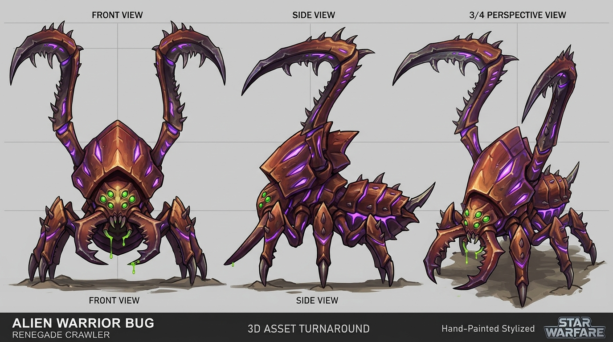
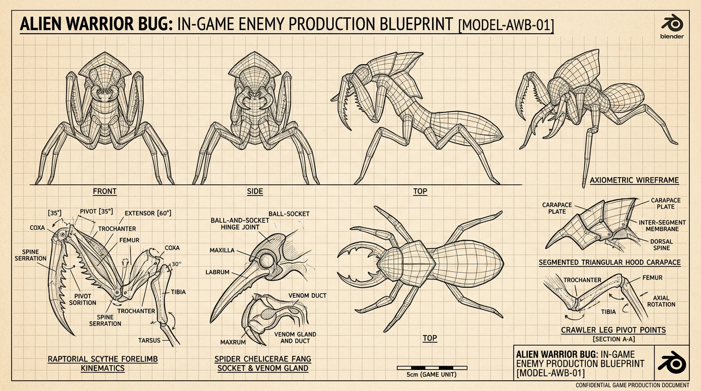
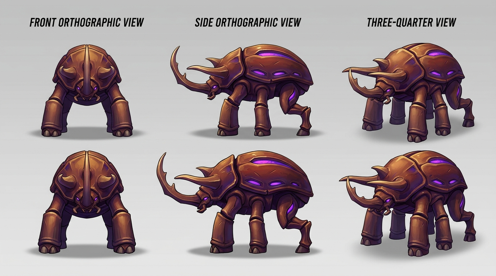
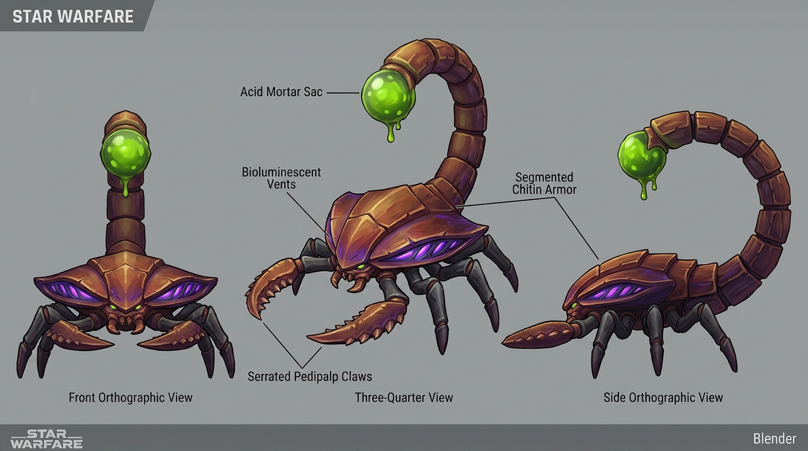
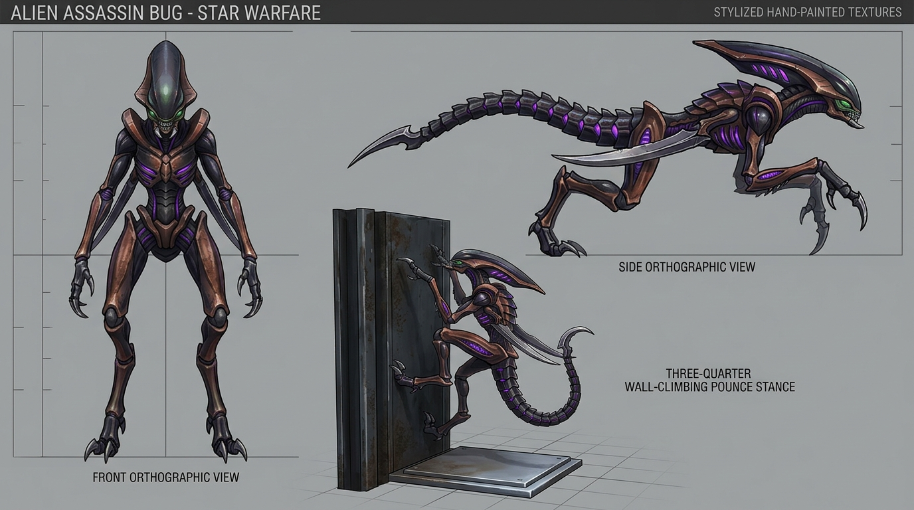

高聳螳螂鐮足 (Raptorial Forelimbs) | 鍬形蟲大顎 | 正面 / 側面 / 3/4 視角 — 點擊放大

螳螂鐮足運動學 (Coxa-Femur-Tibia) | 倒鉤鋸齒 (Spines) | 大顎球窩關節剖面
坦克蟲圖稿使用方式：三角頭冠、覆瓦重甲、四條承重足。前足採寬厚角質蹄墊，後足保留飛節；以低頭衝撞、重踏與腹部弱點示意支援後續模型調整。
全彩圖定義造型與配色；設計稿拆解結構；草稿檢查動作。圖示線網為結構示意，並非已驗證拓撲；既有下方數值為設計提案，未因本次出圖而實作。
查看生成提示詞與參考來源
全彩圖定義造型與配色；設計稿拆解結構；草稿檢查動作。圖示線網為結構示意，並非已驗證拓撲；既有下方數值為設計提案，未因本次出圖而實作。
查看生成提示詞與參考來源
- 主甲殼：橄欖灰
#59634B - 角與甲緣：骨白
#D2C6A5 - 關節：深灰
#303430 - 發光縫：琥珀
#DAA544 - 感應眼：淡黃綠
#BDCB78



{kind=link}
🦏 大型甲虫 (Large Beetle) — 四大兜蟲特化 ＋ 犀象馬運動學規格
融合蘇里南三角兜蟲、海克力士、獨角仙與犀角金龜的冠角優勢，捨棄輕盈爬行，導入大象柱足沉著踏步與犀牛狂暴直線破城衝刺。
[海克力士/獨角仙 中央破城主角]
▲
[蘇里南左肩角] │ [蘇里南右肩角]
▲ │ ▲
│ │ │
┌─────┴───────────────┴───────────────┴─────┐
│ [厚盾型多面斜角胸甲] │ ── 彈開正面 80% 實彈
└─────────────────────┬─────────────────────┘
│
[犀牛低頭蓄勢衝角基部]
│
┌───────────────────┴───────────────────┐
│ 大象柱狀承重前足 (前2足) │ ── 寬大液壓蹄墊，原地重踏引發衝擊波
├───────────────────────────────────────┤
│ 圓拱重型覆瓦狀龜背甲 │ ── HP 1,000 厚實血庫
├───────────────────────────────────────┤
│ 馬式反關節飛節後足 (後2足) │ ── 提供 15m 直線突進的狂暴推進力
└───────────────────────────────────────┘
| 系統維度 | 生物原型與運動學融合 | 遊戲機制與戰術表現 (Attack Table 5) |
|---|---|---|
| 頭冠重角 | 蘇里南三角兜蟲 (兩側肩角) ＋ 海克力士/獨角仙 (中央長下彎角) | 形成天然「破城鉗」；發動「挑動」招式由下往上將玩家挑飛至空中 (150 傷害)。 |
| 常態步態 | 大象柱足 (Elephant Pillar Legs)：沉著、低頻重踏、穩定壓低重心 | 常態移速 5.0 m/s，行走時伴隨金屬地面震顫低音，不受玩家普通子彈擊退。 |
| 衝刺爆發 | 犀牛衝撞 ＋ 馬式飛節後足 (Horse Hock Joints)：強大後蹬爆發力 | 發動「突進」技能：低頭蓄力 0.8 秒後狂暴向前衝刺 15 公尺 (200 傷害)，撞毀掩體。 |
| 近身震盪 | 雙前足高高抬起後重砸地面 | 發動「原地重踏」技能：引發半徑 5.0 公尺範圍震波擊退 (250 傷害)。 |
| 遠程威懾 | 角根兩側高壓生化噴口 | 發動「吐液」技能：射程達 24 公尺的重腐蝕性酸彈 (200 傷害)。 |
| 體積規格 | 視覺身高 2.80m | 體寬 3.20m | 體長 4.10m | 血量 1,000 HP (工虫的 22 倍)，作為小 Boss 級精英破陣坦克。 |
Blender 建模與動畫改造關鍵：
1. 腳掌不能做成細尖爪：前足底端做成類似大象或犀牛的寬厚角質塊蹄，提供沉重噸位的立足感。
2. 頸部與肩部護盾：頭角根部與胸甲之間要有粗厚肌肉皺褶，支持低頭鏟起重物的槓桿動作。
3. 弱點分佈：正面與背甲為極厚抗彈甲，唯一弱點在衝撞過後轉彎遲緩時露出的腹部軟質節片。
1. 腳掌不能做成細尖爪：前足底端做成類似大象或犀牛的寬厚角質塊蹄，提供沉重噸位的立足感。
2. 頸部與肩部護盾：頭角根部與胸甲之間要有粗厚肌肉皺褶，支持低頭鏟起重物的槓桿動作。
3. 弱點分佈：正面與背甲為極厚抗彈甲，唯一弱點在衝撞過後轉彎遲緩時露出的腹部軟質節片。
蠍子蟲圖稿使用方式：A 遠程型與 B 近戰型各按五個色彩角色配置，容許相近色合併為四個色系。兩者共用寬扁胸甲、四條步足、兩支前螯與一條分節尾；A 保留球狀酸囊與細長生物鉗，B 使用膨大厚殼蟹螯與實心倒鉤尾刺。鉗口必須可辨識固定指、活動指、不規則咬齒及柔軟關節膜，避免平面機械盾板。
全彩圖定義造型與配色；設計稿拆解結構；草稿檢查動作。圖示線網為結構示意，並非已驗證拓撲；既有下方數值為設計提案，未因本次出圖而實作。
查看生成提示詞與參考來源
全彩圖定義造型與配色；設計稿拆解結構；草稿檢查動作。圖示線網為結構示意，並非已驗證拓撲；既有下方數值為設計提案，未因本次出圖而實作。
查看生成提示詞與參考來源
- A 主甲殼：沙赭
#A8864A - A 甲緣：淺骨色
#D5C9A8 - A 關節：暗褐
#393129 - A 發光縫／毒囊：酸綠
#B7DB48 - A 感應眼：琥珀
#D99040 - B 主甲殼：黑曜灰
#25282A - B 甲緣：暗銅
#80543B - B 關節：炭黑
#171B1D - B 發光縫：暗橙
#BC6836 - B 感應眼：琥珀
#D99040



{kind=link}
🦂 蝎尾虫 (Spitter) — 沙漠死神蠍 ＋ 鞭蠍雙形態規格
以 Harvey 上傳的重甲死神蠍與鞭蠍模型為架構基準，明確拆分「遠程迫擊酸池型」與「近戰重甲緩速型」兩種戰術職能。
📸 造型架構基準（Harvey 提供）

特徵：寬扁蟹狀胸甲、向前伸展的生物前螯、弧形反弓粗厚分節尾刺與頂端球狀噴射口。新版前螯以固定指、活動指、圓弧掌部及不規則咬齒呈現生物感。
🧬 雙形態戰術核心
-
形態 A：遠程迫擊型 (Artillery)
移動緩慢 (3.0 m/s)。尾刺發射高弧度酸液彈（射程 18m），著彈點殘留 1.5 秒腐蝕小酸池 (DoT)。近戰被貼身時用鋸齒前螯推開揮擊。 -
形態 B：近戰重甲型 (Armored Striker)
取消遠程射擊。前螯改為膨大的厚殼蟹螯，以圓弧掌部提供防護，保留可開合的固定指與活動指；尾端為重型倒鉤骨刺。戰鬥採「前螯抓擊下壓 ＋ 尾刺猛烈螫入」Combo，造成 35% 緩速持續 2 秒。
視覺高：2.05m | 走位半徑：1.00m | 移速：3.0 m/s
| 戰術維度 | 形態 A：遠程酸液迫擊型 | 形態 B：近戰重甲緩速型 |
|---|---|---|
| 作戰定位 | 後排陣地火力 / 封鎖走位 | 前鋒重裝防盾 / 限制玩家位移 |
| 蠍尾武裝 | 球狀生物液壓噴射囊 (Acid Sac) | 重型尖銳倒角幾丁刺 (Heavy Stinger) |
| 遠程攻擊 | 18m 弧線酸液彈，產生 1.5s DoT 酸池 | 無遠程投射物 (射程 0) |
| 近戰動作 | 前螯普通橫掃擊退 (自衛) | 前螯重擊砸地 + 尾刺急速突刺 (Combo) |
| 特殊異常 | DoT 護甲腐蝕 (1.5s 後揮發) | 螫刺命中附加 35% 緩速 (2.0s) |
| 本次定稿配色 | 沙赭甲殼／骨色甲緣／暗褐關節／酸綠囊與縫／琥珀眼 | 黑曜灰甲殼／暗銅甲緣／炭黑關節／暗橙縫／琥珀眼 |
刺客蟲圖稿使用方式：輪廓參考異形／星海爭霸奎蛇／惡靈進化 Wraith：細長分節軀幹、貼肋收折雙刃，四條攀附足加兩條獨立刃臂。頭部依 Harvey 補充圖片改為前壓骨質眉甲、後掠頭冠、外露顎與不規則獠牙；保留午夜藍黑五色配置。草稿檢查前撲、攀牆、倒掛與鑽管，鑽管時收顎並壓低頭頸。
全彩圖定義造型與配色；設計稿拆解結構；草稿檢查動作。圖示線網為結構示意，並非已驗證拓撲；既有下方數值為設計提案，未因本次出圖而實作。
查看生成提示詞與參考來源
全彩圖定義造型與配色；設計稿拆解結構；草稿檢查動作。圖示線網為結構示意，並非已驗證拓撲；既有下方數值為設計提案，未因本次出圖而實作。
查看生成提示詞與參考來源
- 主甲殼：午夜藍黑
#172A38 - 刃緣：灰藍
#426575 - 關節：深灰
#242B30 - 發光縫：冷青
#58D6CC - 感應眼：淡黃綠
#C4D879



{kind=link}
⚡ 刺客蟲 (Fast Bug) — 異形 × 奎蛇 × Wraith 機動刺客
依 Harvey 指定的異形／星海爭霸奎蛇／惡靈進化 Wraith 方向，結合後掠長頭蓋、柔性分節軀幹與貼身雙刃。造型需支援高速前撲、牆面攀爬、天花板倒掛與收身鑽入通風管；以下動作與數值均為設計目標。
[異形後掠流線長頭蓋]
▲
│ 狹長冷青感應縫／淡黃綠眼
┌──────────┴──────────┐
│ ┌───────┬───────┐ │
│ │ 獠牙及分節口器 │ │
└──┴───────┬───────┴──┘
│ [雙肩折疊關節 (Wraith Scythe Pivot)]
┌──────┴──────┐
│ 柔韌胸廓 ├──[幽靈折疊長雙刃]（緊貼肋側，出刀橫斬）
└──────┬──────┘
│
[多段鉸接蛇形脊椎] ── (可滑動壓縮，直徑 < 0.8m 通過通風管)
│
┌──────┴──────┐
│ 後推進腔 │ ── 冷青微光能量狹縫
└──┬────────┬─┘
│ │
[折疊彈簧足] [折疊彈簧足] ── (附帶微刺吸附墊，支援天花板/牆面倒掛)
| 戰術定位 | 隱秘暗殺刺客 / 垂直管道滲透者 |
| 移動速度 | 7.0 m/s (原版數值，全場最高) |
| 生命值 | 60 HP (高於兵蟲 45) |
| 專屬攻擊技能 | 8.0m 凌空扑击 (130 傷害) + 隱蔽雙刃近身交叉斬 (90 傷害) |
| 管道通過尺寸 | 直徑 0.85m 圓柱管道 (身形完全收縮) |
| 特殊機動 | 天花板倒掛行走、金屬壁面高速垂直攀爬、管道穿梭 |
| Blender 骨架 | Spline IK 柔性脊椎鏈 (5~7節) + 兩側雙鐮關節 + 4 條壁面攀爬足 |
Blender 改造關鍵提示：
1. 雙肩鐮刀採用「反向折疊關節」，平時收折在胸腹兩側護板內，高速奔跑時完全流線破風。
2. 足爪末端必須有三向反對稱錐爪與肉墊，呈現能夠牢牢抓死金屬牆面與天花板的抓力感。
3. 身體截面必須是扁平水滴型（寬而扁），而非兵蟲的隆起圓拱，才能鑽入通風管道。
1. 雙肩鐮刀採用「反向折疊關節」，平時收折在胸腹兩側護板內，高速奔跑時完全流線破風。
2. 足爪末端必須有三向反對稱錐爪與肉墊，呈現能夠牢牢抓死金屬牆面與天花板的抓力感。
3. 身體截面必須是扁平水滴型（寬而扁），而非兵蟲的隆起圓拱，才能鑽入通風管道。
原版 bug_01.png 貼圖（版權風險＋肉食犬齒）

問題：頭部為低矮平胸，嘴部帶有哺乳動物犬齒與紅肉牙齦，缺乏具備威脅感的高聳捕食肢體。
新版重製方案（高聳螳螂鐮足 ＋ 鍬形大顎 ＋ 原生配色）
解決：肩膀上方聳立一對螳螂倒鉤鐮足，下顎為鍬形蟲鋸齒巨螯；完美保留紅褐手繪甲殼與幽紫發光裂縫。
🎨 兵蟲參考色票 (Palette)
此組色票僅供既有兵蟲使用。刺客、蠍子與坦克的專屬色票位於各分頁；共用材質畫法，不共用整套顏色。明暗變化不另算色系。
幾丁質主甲殼 (Chitin Carapace)
#8B3E2B (紅褐手繪質感)
幽紫生物發光縫 (Biolum Slits)
#A855F7 (鐮足/甲殼側縫)
蜘蛛複單眼群 (Spider Eyes)
#22C55E (冷翠綠透鏡)
關節活動底膜 (Joint Underlayer)
#2B282C (暗炭黑幾丁膜)
毒牙強酸腐蝕液 (Acid Droplets)
#84CC16 (酸蝕滲液)
📐 兵蟲建模規格參數
| 總可視高度 | 2.00 m (含高聳鐮足) |
| 本體佔地 | 2.28m X × 3.01m Z |
| 攻擊動作半徑 | 2.20 m (鐮足垂直下劈射程) |
| 目標面數 | 1,500 ~ 2,800 三角面 (Mid-poly) |
| 骨骼架構 | 原版 22 骨 + 鐮足 6 骨 + 大顎 2 骨 |
| 貼圖解析度 | 1024x1024 (手繪風格 Diffuse) |
🛡️ 兵蟲肢體運動參考
- 螳螂前肢 (Raptorial)：具備基節 (Coxa)、轉節、腿節 (Femur) 與脛節 (Tibia)，內側長有一排倒鉤刺，負責下劈刺穿。
- 鍬形大顎 (Mandibles)：水平閉合剪碎獵物，基部為球窩關節。
- 後行進足 (Legs)：4 條爬行後足負責貼地高速推進。